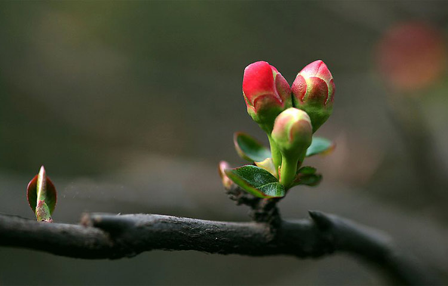

在寒风中哆嗦了许久的人们，小编激动的告诉你们，再过三天就立春了，这次春天真的到了！
立春是汉族民间重要的传统节日之一。“立”是“开始”的意思，自秦代以来中国就一直把立春作为孟春时节的开始。立春是二十四节气中的第一个节气，春是温暖、鸟语花香，春是生长、耕耘播种。
在24节气之后，我国人民又将节气细化为候应，包括动物候应、植物候应和自然现象候应，每个节气对应三个候应。中国传统将立春的十五天分为三候：“一候东风解冻，二候蜇虫始振，三候鱼陟负冰”，说的是东风送暖，大地开始解冻。
一候东风解冻。古人用词总是精良，一个“解”字仿佛东风轻轻的一吹，就拉开了整个春天的序幕，似乎还带了几分的勇敢与坚定。二候蛰虫始振。藏在泥土中挨过寒冬的虫豸都关闭了冬眠状态，慢慢的蠕动、感受渐渐变暖的阳光。三候鱼陟负冰。鱼因为水温变暖，竞相浮游到水面，争先恐后的想要看看春意盎然的世界。水中尚有未完全融化的碎冰，在岸上看，就如同鱼背着冰块在水中游动。
在立春这天举行纪念活动的历史非常悠久，至少在3000年前就已经出现。这些习俗几经演变，仍以多种形式存在于现今生活当中。
迎春是立春的重要活动，事先必须做好准备进行预演，俗称演春。经过预演才能在立春那天正式迎春，迎春在立春前一日进行，目的是把春天和句芒神接回来。迎春设春官，该职由乞丐担任，或者由娼妓充当，并预告立春之时。
鞭春牛，又称鞭土牛，是为民俗文化的重要内容。鞭春牛的意义不限于送寒气、促春耕，也有一定的巫术意义。山东民间要把土牛打碎，人们争抢春牛土谓之抢春，以抢得牛头为吉利。另外还有采茶祭春牛活动，湖北地区还举行龟子报春活动。
此时阳气上升容易伤阴，所以要特别注重养阴，可以多选用百合、山药、莲子、枸杞等食物。立春之后的一段时间往往冷暖不定，在饮食上可增加吃大蒜、洋葱、芹菜等“味冲”食物的次数，对预防伤寒感冒等春季多发的呼吸道感染大有益处。立春之后依然比较干燥，喝花茶可以帮助驱散冬季聚积在人体内的寒气和邪气。
1、立春是二十四节气中的第一个节气，代表着万物复苏、大地回暖；
2、立春后温度并不会升到“理想”状态，秋裤该穿还得穿，当心倒春寒！